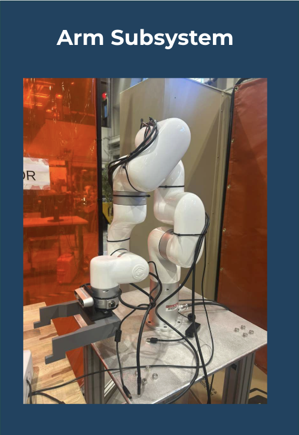
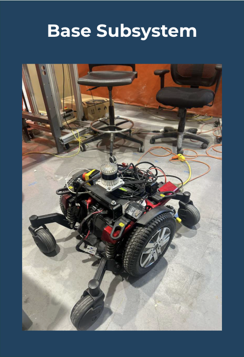
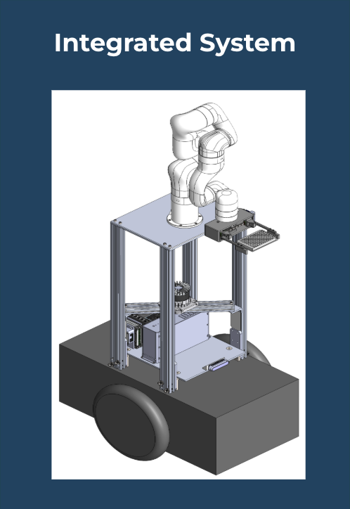

Catalyst: Mobile Manipulator for Lab Automation



Project Overview
Catalyst is an autonomous mobile manipulator designed to automate repetitive tasks in laboratory environments, specifically the high-precision handling of wellplates. My work so far centers on the Perception-to-Manipulation pipeline, bridging the gap between raw sensor data and reliable robotic interaction.
1. Hand-in-Eye Calibration & TF Validation
To enable the robot to "see" its workspace, I implemented a Hand-in-Eye calibration routine to establish the rigid transform between the camera and the robot’s end-effector.
- Used an Intel RealSense D435i mounted directly to the xArm6 end-effector.
- Solved the calibration using the $AX = XB$ formulation, utilizing 27 unique AprilTag configurations to optimize the static transform.
- Validated the transform tree in RViz to ensure that AprilTag pose estimates remained consistent across the entire arm workspace.
2. Wellplate Grasp Pose Computation
Following calibration, I developed the logic to translate detected markers into actionable Tool Center Point (TCP) targets.
- TCP Definition: Calculated the precise geometric center of our custom 3D-printed gripper fingers relative to the final robot link.
- Frame Chaining: Built a pipeline to compute the wellplate center by measuring offsets from AprilTags mounted on the physical stand.
- Coordinate Alignment: Debugging rotational frame misalignments to ensure the robot can grasp objects even when they are rotated relative to the table edge.
Engineering Challenges
Error Propagation
Small rotational errors in the camera-to-EE transform amplify across the kinematic chain. I am currently implementing temporal averaging of pose detections to filter out single-frame noise and improve grasp repeatability.
Mechanical Compliance
Our custom 3D-printed gripper introduces minor flex under load. To maintain precision placement of wellplates, I am refining the CAD models and adjusting the software-defined TCP to account for finger deflection.